Бизнес, который работает на семью
Устойчивый семейный бизнес — это не только деньги. В FBT вы выстроите бизнес, который не держится на одном человеке, договоритесь с семьёй о ролях, деньгах и долях — и сможете однажды передать детям работающее дело, а не хаос.
Люба Бэй и её муж Акмаль — с семьёй
О семейном бизнесе Люба знает не из книг: вместе с семьёй она вложила в своё дело всё, что было, прошла через хаос и выстроила систему.
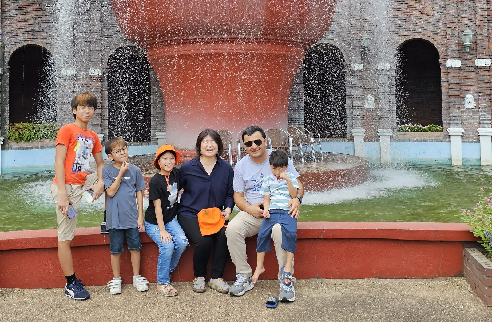
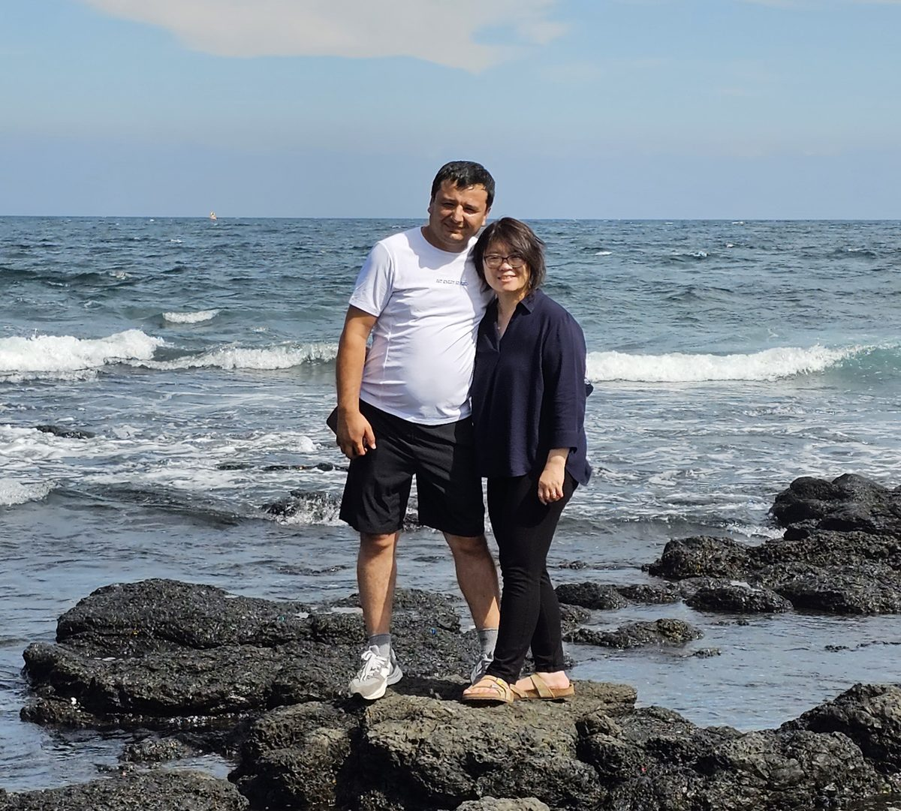
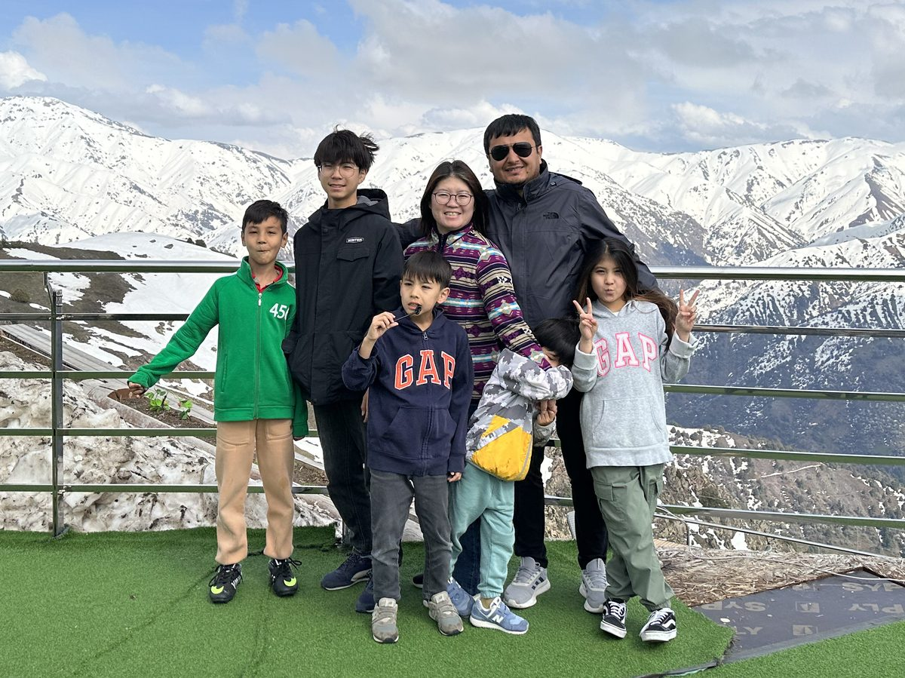
Вы начинали бизнес ради семьи. А теперь он забирает у вас время с семьёй
Большинство предпринимателей начинали ради свободы, семьи и будущего детей. А потом всё пошло по-другому. Узнаёте?
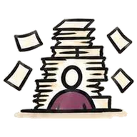
Нет времени. Всё уходит в текучку — «заеду на минутку» в офис превращается в целый выходной.
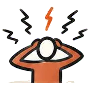
Нельзя уехать. Все решения проходят через вас: уедете на неделю — всё встанет.
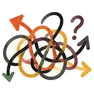
Всё смешалось. Дома спорите о работе, на работе — о семье. Деньги семьи и бизнеса давно в одном кармане.
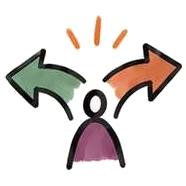
Дети против бизнеса. Они видят в нём не возможность, а то, что забирает у них родителей.
Если вы узнали себя, дело не в том, что вы мало работаете. Вы работаете больше всех. Проблема в том, что бизнес держится на вас — и пока это так, он будет забирать ваше время у семьи.
Бизнес работает на семью, только когда он может работать без вас
…то у вас нет свободного времени сейчас и нечего передать детям потом. Бизнес не плохой — просто всё знаете и решаете только вы.
Поэтому в FBT порядок такой: сначала наводим порядок в бизнесе, потом готовим передачу дела. Пока вы полны сил, вы выстраиваете:
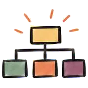
Бизнес-модельпонятная вам, партнёрам и детям
Маркетинг и продажиработают без вашего звонка
Финансыгде деньги бизнеса, а где — семьи
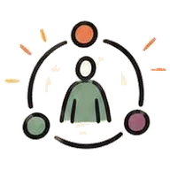
Роли и командакто за что отвечает
Но в семейном бизнесе одной системы мало. Можно выстроить процессы — и всё равно поссориться с братом из-за доли или с сыном из-за его зарплаты. Потому что вы живёте сразу в трёх ролях.
Дома вы — мама или папа. В компании — директор. На бумаге — собственник
У каждой роли своя задача. Проблемы начинаются, когда их смешивают.
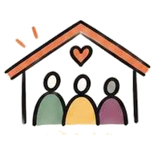
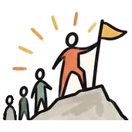
Такие фразы звучат разумно. Но именно из-за них ссорятся семьи и закрываются компании. Хорошая новость: разделять роли — это навык. Ему можно научиться, как маркетингу или финансам.
Трек «Семья и бизнес» проходит через всю программу
К пяти основным модулям добавлены уроки для семейного бизнеса. Задания вы делаете на своей ситуации, наставник проверяет каждое.
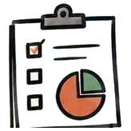
Модуль 03 · ФинансыДеньги семьи и деньги бизнесаСколько бизнес может отдавать семье без ущерба для роста. Зарплата собственника и родственников, резервы, выплаты.
деньги семьи отдельно от денег компанииЧто действительно должен делать собственник, а что пора отдать. Приоритеты, в которых есть место для близких.
система приоритетов и свободные вечераКак брать в бизнес родных по роли, а не по родству. Зоны ответственности и как требовать с близких без обид.
понятные роли для каждого члена семьи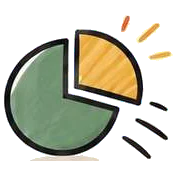
Новый урок · СобственностьДоли, решения и дивидендыКому что принадлежит, кто и как принимает решения, как делить прибыль. Как не поссориться с братом, партнёром или супругом из-за денег.
правила собственников, записанные заранееПлан передачи: кому, когда и что. Как вырастить преемника или нанять директора, а семье остаться собственником.
план преемственности вашего бизнесаКак рассказать детям историю семьи и дела, дать им первую ответственность и место, где они могут предлагать своё.
шаги вовлечения детей по возрастамТрек подходит не только тем, кто уже работает с семьёй. Семейный бизнес — это бизнес, который работает на семью. Даже если сейчас вы в нём один.
Узнайте себя хотя бы в одной ситуации
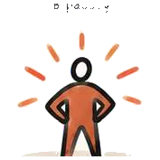
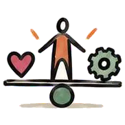
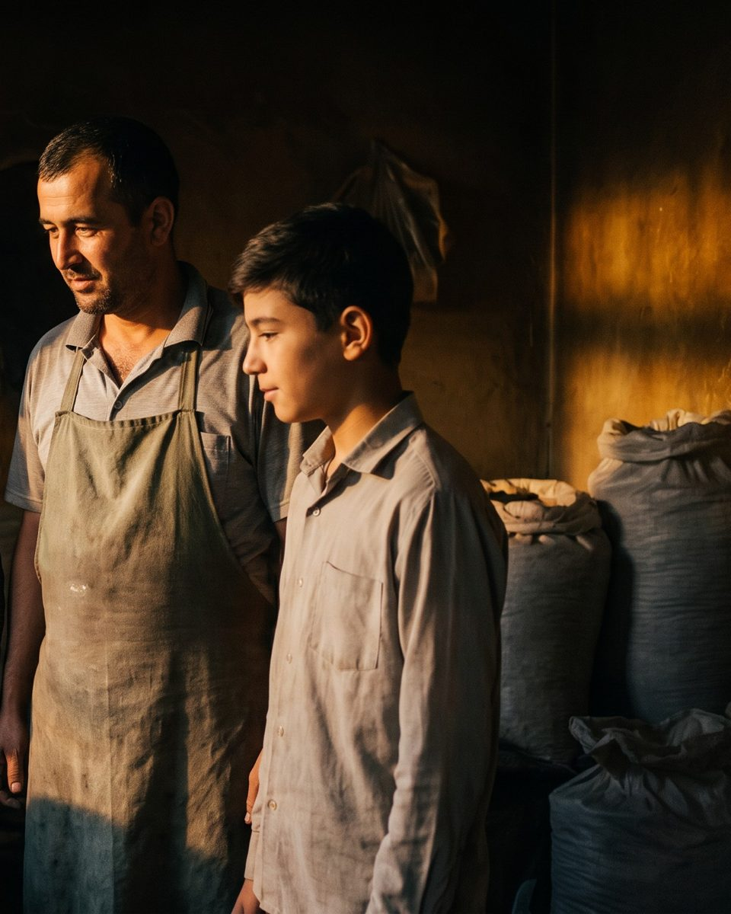
заглушка · фрагмент ИИ-фото, нужен родитель + ребёнок-подростокНедостаточно просто захотеть передать бизнес детям
Ребёнка невозможно заставить полюбить семейное дело. Но можно сделать так, чтобы он увидел в нём не обязанность, а свою возможность. И передать ему не рабочее место, а прочную основу:
Всё это звучит правильно. Но вы, скорее всего, уже проходили бизнес-обучение. Чем FBT отличается от него?
Мы тоже учим продажам, маркетингу и финансам. А потом спрашиваем: ради чего вы всё это строите?
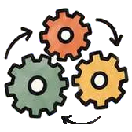
Как выстроить бизнес, который работает, даже когда вас нет в офисе?В основе — швейцарская методология Swiss Create: строить бизнес не на несколько лет, а так, чтобы его продолжили дети и внуки. Victorinox и Ferrero когда-то тоже были небольшими семейными предприятиями.
Что наше семейное дело даёт людям?
Деньги часто становятся причиной ссор в семье. А объединяет семью общее дело, которым гордятся все — и родители, и дети.
Договариваться о ролях проще, когда учитесь вдвоём
Проходите программу с супругом, партнёром, братом или взрослым ребёнком. Вы говорите на одном языке, делаете задания о своём общем бизнесе — и договорённости появляются по ходу обучения, а не в споре.
Скидка суммируется с текущей ценой.
Создайте устойчивый семейный бизнес — такой, который стоит передавать дальше
Третий поток FBT Online стартует 10 октября. В потоке 12 мест, следующий — только в 2027 году.
Всё ещё сомневаетесь? Пройдите диагностику
Это займёт 5 минут и это бесплатно. Вы увидите, насколько устойчив ваш бизнес: держится он только на вас или уже может работать сам.
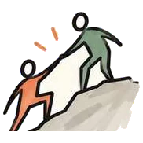
Куратор бесплатно разберёт ваш результат и даст обратную связь — голосовым сообщением в Telegram.